We define an Automata Network  as a structure
as a structure
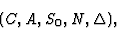 |
(11) |
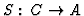
is a state, S0 - an initial state;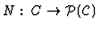
is a neighborhood system,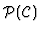
is the power-set of C,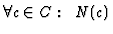
is the neighborhood of c;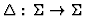
is a global dynamic rule (GDR),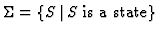
.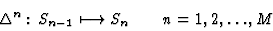 |
(12) |
The global dynamic rule
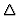
comes about from the local dynamic rules (LDRs)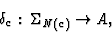 |
(13) |
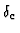
gives a new state value to the cell c as a function of cell states from the neighborhood N(c) of c. The action of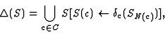 |
(14) |
Automata Networks can be considered as a generalization of Cellular Automata, the main difference is our automata networks have non-regular structure of the system of the cell neighborhoods. There is no a common template of vicinity for cells, the neighborhoods of cells have variable cardinality and, hence, the LDRs have variable arity. There are possible cases when
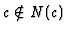
and even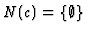
.
An automata network  works as follows. If an initial state
S0 is given, it iteratively applies the GDR
until it
reaches a steady attractive state SA:
works as follows. If an initial state
S0 is given, it iteratively applies the GDR
until it
reaches a steady attractive state SA:
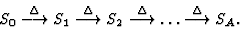